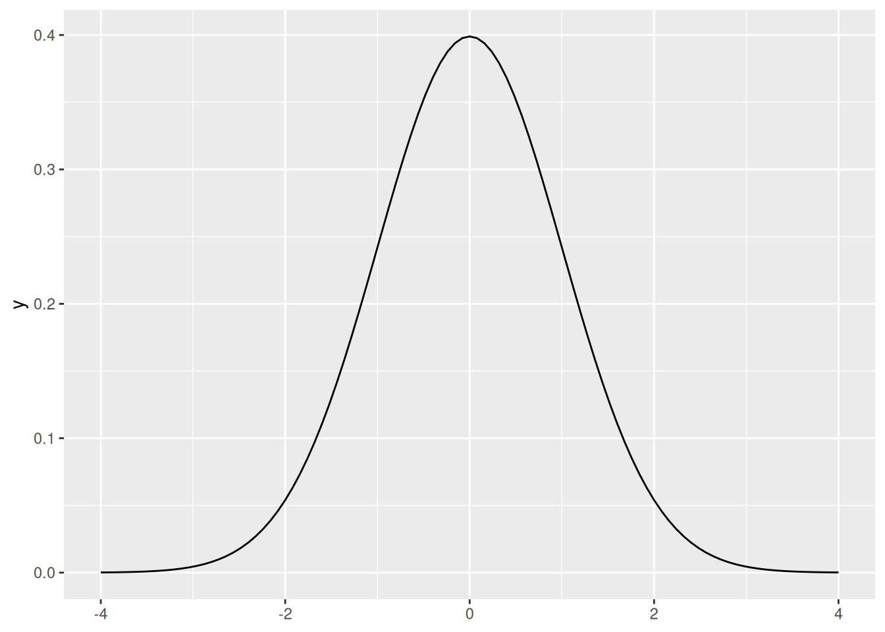

{kind=link}
dbinom(x = 0, size = 100, prob = 0.02)[1] 0.1326196Joint probability: \(P(A \cap B)\). The probability that the two events will occur in one realization of the experiment.
Law of total probability: \(P(A) = P(A \cap B) + P(A \cap B^C)\).
Addition rule: \(P(A \cup B) = P(A) + P(B) - P (A \cap B)\).
Conditional probability: \(\displaystyle P(A|B)=\frac{P(A \cap B)}{P(B)}\)
Bayes theorem: \(\displaystyle P(A|B) = \frac{P(A) \cdot P(B|A)}{P(B)}\)
A random variable is a function (\(X: \Omega \to \mathbb{R}\)) of the outcome of a random generative process. Informally, it is a “placeholder” for whatever will be the output of a process we’re studying.
A probability distribution describes the probabilities associated with the values of a random variable.
Random variables (and probability distributions) can be discrete or continuous.
A sample space in which there are a (finite or infinite) countable number of outcomes
Each realization of random process has a discrete probability of occurring.
What’s the probability that we’ll roll a 3 on one die roll: \[Pr(y=3) = \dfrac{1}{6}\]
If one roll of the die is an “experiment,” we can think of a 3 as a “success.”
\(Y \sim Bernoulli \left(\frac{1}{6} \right)\)
Fair coins are \(\sim Bernoulli(.5)\), for example.
More generally, \(Bernoulli(\pi )\). We’ll talk about other probability distributions soon.
Let’s do another example on the board, using the sum of two fair dice.
What’s the probability that the sum of two fair dice equals 7?
Probability of each occurrence encoded in probability mass function (PMF)
\(0 \leq f(x_i) \leq 1\): Probability of any value occurring must be between 0 and 1.
\(\displaystyle\sum_{x}f(x_i) = 1\): Probabilities of all values must sum to 1.
Similar to PMF from before, but for continuous variables.
Using integration, it gives the probability a value falls within a particular interval
\[P[a\le X\le b] = \displaystyle\int_a^b f(x) \, dx\]
Total area under the curve is 1.
\(P(a < X < b)\) is the area under the curve between \(a\) and \(b\) (where \(b > a\)).
Source: Wikipedia Commons
What is the probability of rolling a 6 or lower with two dice? \(F(6)=?\)
There are many useful probability distributions. In this section we will cover three of the most common ones: the binomial, uniform, and normal distributions.
A Binomial distribution is defined as follow: \(X \sim Binomial(n, p)\)
PMF:
\[ {n \choose k} p^k(1-p)^{n-k} \] , where \(n\) is the number of trials, \(p\) is the probability of success, and \(k\) is the number of successes.
Remember that:
\[ {n \choose k} = \frac{n!}{k!(n-k)!} \]
For example, let’s say that voters choose some candidate with probability 0.02. What is the probability of seeing exactly 0 voters of the candidate in a sample of 100 people?
We can compute the PMF of a binomial distribution using R’s dbinom() function.
dbinom(x = 0, size = 100, prob = 0.02)[1] 0.1326196dbinom(x = 1, size = 100, prob = 0.02)[1] 0.2706522Similarly, we can compute the CDF using R’s pbinom() function:
pbinom(q = 0, size = 100, prob = 0.02)[1] 0.1326196pbinom(q = 100, size = 100, prob = 0.02)[1] 1pbinom(q = 1, size = 100, prob = 0.02)[1] 0.4032717Compute the probability of seeing between 1 and 10 voters of the candidate in a sample of 100 people.
A uniform distribution has two parameters: a minimum and a maximum. So \(X \sim U(a, b)\).
\[ \displaystyle{ \begin{cases} \frac{1}{b-a} & \text{, }{x \in [a, b]}\\ 0 & \text{, otherwise} \end{cases} } \]
\[ \displaystyle{ \begin{cases} 0 & \text{, }{x < a}\\ \frac{x-a}{b-a} & \text{, }{x \in [a, b]}\\ 1 & \text{, }{x>b} \end{cases} } \]
In R, dunif() gives the PDF of a uniform distribution. By default, it is \(X \sim U(0, 1)\).
library(tidyverse)ggplot() +
stat_function(fun = dunif, xlim = c(-4, 4))Meanwhile, punif() evaluates the CDF of a uniform distribution.
punif(q = .3)[1] 0.3Evaluate the CDF of \(Y \sim U(-2, 2)\) at point \(y = 1\). Use the formula and punif().
A normal distribution has two parameters: a mean and a standard deviation. So \(X \sim N(\mu, \sigma)\).
In R, dnorm() gives us the PDF of a standard normal distribution (\(Z \sim N(0, 1)\)):
ggplot() +
stat_function(fun = dnorm, xlim = c(-4, 4))
Like you might expect, pnorm() computes the CDF of a normal distribution (by default, the standard normal).
pnorm(0)[1] 0.5pnorm(1) - pnorm(-1)[1] 0.6826895What is the probability of obtaining a value above 1.96 or below -1.96 in a standard normal probability distribution? Hint: use the pnorm() function.
This is sometimes called the frequentist interpretation of probability. There are other possibilities, such as Bayesian interpretations of probability, which describe probabilities as degrees of belief.↩︎